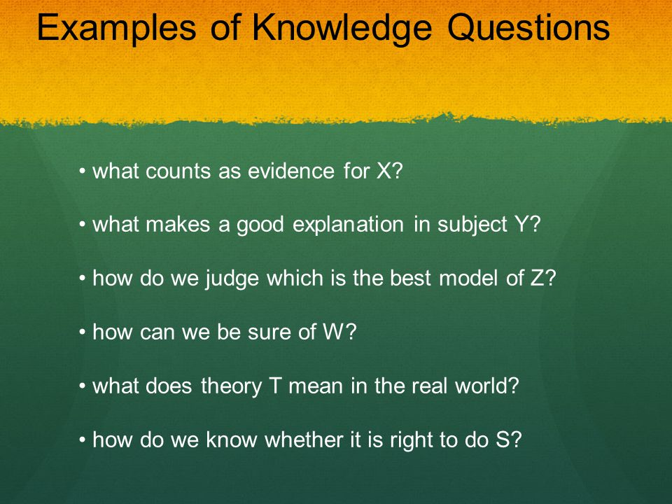

Asking a good Level 2 Knowledge Question is key.
Do not ask a question that you can answer in a couple of sentences.
Do not ask a question that you can answer with research.
Do not ask a question that is only about your topic.
Make sure your question is open-ended. There should be multiple possible answers that a person could
reasonably support.
Your question must be about knowledge, and use ToK terminology.
